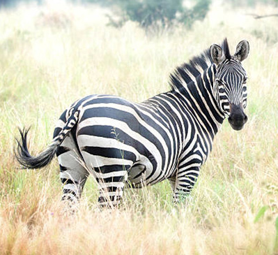
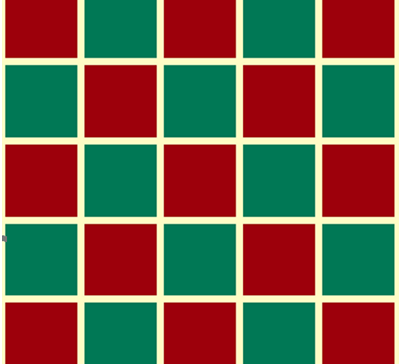

Figure 1: Examples of patterns


You can make patterns by combining different shapes in a logical way as shown in Figure 2. You should think logically about the sequence of the patterns to identify which shape starts and which shape follows next. Also, you should have an idea of the final pattern you want to make.
Figure 2 Different shapes logically arranged to form a pattern
Six blue shapes form a repeating pattern from left to right: a wide rectangle, a narrow rectangle and an upright triangle, followed by the same three shapes again.